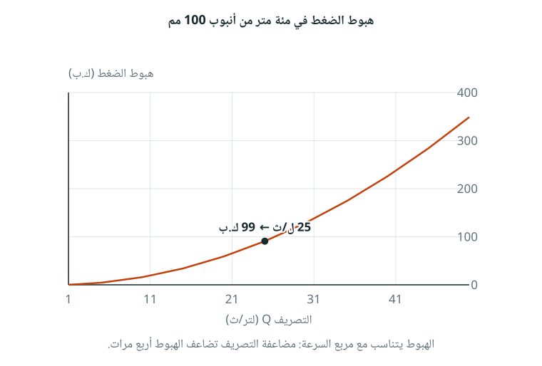

كيف يغيّر الاحتكاك ضغط الماء داخل الأنبوب؟
غيّر القطر والتصريف والطول، وتابع هبوط الضغط على المقياس.
المقياس يبدأ عند الحالة الافتراضية (100 مم · 25 لتر/ث · 100 م) = 99 ك.ب.
افتراضات النموذج والمصدر
Δp = f · (L/D) · ρv²/2
ماء عند 20 °م: كثافة 998 kg/m³ ولزوجة 1.002 mPa·s
خشونة الفولاذ التجاري 0.045 مم
أنبوب أفقي مستقيم بلا قطع أو انحناءات
لا تفاعل كيميائي ولا ترسّب
Water density and dynamic viscosity — Engineering ToolBox
Darcy-Weisbach equation and friction factor — Engineering ToolBox
الماء لا يجري في الأنبوب مجانًا: الاحتكاك بجدار الأنبوب يأكل جزءًا من الضغط، والمضخة تعيد ما أكلته. الحساب يجري بمعادلة دارسي–فايسباخ، وفيها ثلاثة عوامل: الطول، ونسبة القطر، ومربع السرعة.
اللوحة تريك أثر كل عامل. انتبه إلى القطر وحده: مضاعفته تقلّل الهبوط إلى الربع تقريبًا عند التصريف نفسه، لأن السرعة تنزل إلى الربع. ولهذا يقيس المهندس الأنابيب بالسرعة لا بالتصريف.
كيف تعمل الظاهرة؟
الطبقة الملامسة للجدار ساكنة، والطبقات التالية تتحرك بسرعات متزايدة. اللزوجة تنقل الزخم بينها فينشأ إجهاد قصّ على الجدار. في الجريان المضطرب تُضاف خسارة الاضطرابات الدوامية، وهي تتناسب مع مربع السرعة لأن الطاقة الحركية المفقودة في كل دوامة تتناسب مع v².
العلاقة بالأرقام
Δp = f·(L/D)·ρv²/2، ومعامل الاحتكاك f من سوامي–جاين: f=0.25/[log₁₀(ε/3.7D+5.74/Re^0.9)]². لأنبوب 100 مم وطول 100 م وتصريف 25 لتر/ث تكون السرعة 3.18 م/ث وRe=317 ألفًا وf=0.0148، فيهبط الضغط 99 كيلوباسكال — أي قرابة ضغط جوي كامل.
مفاهيم متقاربة
يُخلط بين هبوط الضغط الناتج عن الاحتكاك وبين فرق المناسيب: ارتفاع العمود المائي يستهلك ضغطًا أيضًا لكنه قابل للاستعادة، أما الاحتكاك فطاقة تُبدَّد حرارة إلى الأبد. ويُخلط بين القطر الداخلي والخارجي، والفرق بينهما هو سُمك الجدار الذي يغيّر الحساب كله.
حدود التطبيق
معادلة سوامي–جاين تقريبية وتصلح لأنابيب تجارية خشونة نسبية بين 0.00001 و0.01، وتخطئ عند الأطوال القصيرة حيث تتغلب القطع والانحناءات على احتكاك القشرة. وتفشل في الموائع غير النيوتنية أو عند الجريان المتموج بين 2300 و4000.

| الكمية | القيمة | المصدر |
|---|---|---|
| كثافة الماء عند 20 °م | 998 kg/m³ | [1] |
| لزوجة الماء عند 20 °م | 1.002 mPa·s | [1] |
| هبوط الضغط عند 100 مم و25 لتر/ث و100 م | 99 ك.ب | [2] |
المصادر
- 1 Water density and dynamic viscosity — Engineering ToolBox. www.engineeringtoolbox.com/water-dynamic-kinematic-viscosity-d_596.html · اطُّلع عليه 2026-11-16
- 2 Darcy-Weisbach equation and friction factor — Engineering ToolBox. www.engineeringtoolbox.com/darcy-weisbach-equation-d_646.html · اطُّلع عليه 2026-11-16
راجعه: مراجعة آلية — بوابة الديوان (فحص بنيوي وأرقام) 2026-11-16 · 2026-11-16 · آخر تحديث 2026-11-17
رجوع إلى المعمل